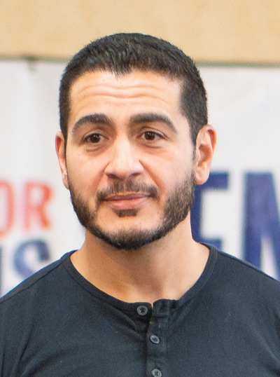

| MI 레이스 카드 | |
| 기준 2026-06-11 | |
| 항목 | 내용 |
|---|---|
| 구도 | 민주 방어 |
| 현직/구도 | 공개석 (Peters 은퇴) |
| 등급 | Toss Up |
| 최신 폴 | 【수집】 |
| 모금(현금) | — |
| 한국 관심 | 자동차·관세 |
| 경선 — 민주당 경선 | 2026-08-04 예정 · El-Sayed 34 / Stevens 31 / McMorrow — 3파전 (RacetotheWH 6월) |
미시간 Michigan
Peters 은퇴로 민주당이 방어해야 하는 공개석. 8개 경합주 중 본선이 공화당에 가장 유리한(오차범위 내) 유일한 주로, Cook·Sabato 모두 Toss-up으로 분류합니다. 민주당 경선(8/4)이 진보(El-Sayed)·온건(Stevens)·풀뿌리(McMorrow) 3파전으로 늦게까지 이어져, 공화당 Rogers보다 본선 전환이 늦다는 점이 리스크입니다.
- 구도: 민주 방어 공개석(Peters 은퇴) — 8개 경합주 중 본선이 공화에 가장 유리(Cook·Sabato Toss-up).
- 변화: 민주 경선(8/4) 3파전이 늦게까지 — El-Sayed 부상·McMorrow 모금 1위·Stevens 본선 최강의 엇갈림.
- 한국 함의: LG·SK·삼성 배터리 본진이나 후보의 직접 한국 입장은 미확인(추정 연결고리만).
1. 주 개요
- 경제 — 자동차·EV 배터리 본진: 미시간 상원 레이스의 경제 서사는 EV 배터리에 묶여 있습니다. GM과 한국 LG에너지솔루션의 Ultium Cells 합작이 Lansing·Orion Township에 약 70억 달러 규모로 들어섰고, 2025년 5월 GM이 Lansing의 41GWh 공장 지분을 LG에 매각해 LG 단독 소유로 전환했습니다. 다만 연방 EV 보조금($7,500)이 2025년 9월 종료되자 북미 EV 수요가 급감 — LG는 Lansing 양산을 하반기로 연기했고, GM은 2025년 10월 배터리·EV 시설에서 3,400명 이상 감원을 발표했습니다. (American Progress · Bridge MI)
- 선거사 — 좁아지는 민주 마진: 미시간 상원은 2018년 Stabenow +6.5 → 2020년 Peters 약 +1.7 → 2024년 Slotkin +0.3으로 민주 우위가 매 사이클 축소됐습니다. 공교롭게 2024년 Slotkin에게 0.3%p로 패한 인물이 이번 공화 후보 Mike Rogers입니다. 동시에 대선은 2020년 Biden 승 → 2024년 Trump +1.5(약 8.3만 표)로 역전됐습니다. (NBC · Ballotpedia 2020)
- 유권자 구성의 정량 변화(인종·교외/도시 비중) 수치는 현재 미확보 — 확인되면 보강합니다.
2. 선거 제도
- 경선 8/4, 결선(runoff) 없음: 본선거 경선은 단순 다수(plurality)로 후보를 확정합니다. 미시간에 결선 제도는 없습니다. (별도 1차 출처 보강 예정 — 【수집】)
- 개방형 경선(open primary): 미시간은 정당 등록제가 없어 등록 유권자는 어느 정당 경선에든 참여할 수 있습니다. 단 한 표에서 두 정당을 교차 선택하면 무효 처리됩니다. (Ballotpedia · LWV Michigan)
- 조기·부재자 투표(2022 Prop 2): 헌법 개정으로 모든 연방 선거마다 최소 9일 연속 조기 대면투표가 보장되고, 단일 신청으로 향후 선거 자동 부재자투표(영구 명부)가 명문화됐으며, 선거 당일 오후 8시까지 동시등록 후 투표가 가능합니다. (Ballotpedia Prop 2)
3. 후보자
🗳️
민주당 후보 — 미정경선 중
2026-08-04 민주당 경선
경쟁 후보: 헤일리 스티븐스 · 맬러리 매크모로 · 압둘 엘사이드
↓ 페이지 하단 경선 후보에서 상세 프로필을 확인하세요.
마이크 로저스 Mike Rogers공화
1963년생(63세) · 전 연방 하원의원(MI-8) · 전 하원 정보위원장 · 전 FBI 특수요원
가족 노동계급 가정 출생; 부인 Kristi Rogers(2010 결혼), 첫 결혼 자녀 2명; 형 Bill은 전 미시간 주 하원의원
학력 Adrian College 형사사법·사회학 학사(1985), University of Michigan ROTC 육군 임관
경력 MI-8 하원 7선(2000~2012) · 2024 미시간 상원 출마 → Slotkin에 0.34%p 석패
펀드레이징 외부지출 약 $45M 지원, 본인 현금 약 $4.2M(5월 기준)
강점
- 국가안보·정보 전문성
- 전주적 인지도(2024 출마)
- 민주 경선 장기화 동안 본선 선점
약점
- 2024 패배 이력
- 트럼프와의 관계 미묘
- ‘중국 연루’ 사업 이력 공격
정책 대중국 강경·국가안보 · 트럼프 관세 지지(전략적 도구) · 법과 질서·제조업 보호
🇰🇷 한국 함의 대중국 통상·제조업 보호가 핵심; 한국·동맹 직접 거명 입장은 공개 출처 없음(트럼프식 전략적 관세 지지)
민주당 경선 후보 (8/4 경선)
헤일리 스티븐스민주
Haley Stevens
1983년생(43세) · 연방 하원의원(MI-11) · 전 오바마 행정부 자동차산업 구제 태스크포스
- 학력 American University 정치학·철학 학사(2005), 사회정책·철학 석사(2007)
- 펀드레이징 Q1 2026 개인기부 $1.73M, 현금 보유 약 $3.3M(3인 중 최다)
강점 본선 경쟁력 최강(Rogers 대비 +5) · 상원 지도부 비공식 지지 · 교외 경합지 승리 실적
약점 경선 지지율 추세 열세 · 풀뿌리 열기 부족 · 진보 진영 냉담
정책 제조업·자동차산업 보호 · 대중국 커넥티드 차량 수입 차단(No Chinese Cars Act) · UAW 노동 친화
맬러리 매크모로민주
Mallory McMorrow
1990년생(36세) · 미시간 주 상원의원(2019~) · 전 산업 디자이너
- 학력 University of Notre Dame 산업디자인 학사(2008)
- 펀드레이징 Q1 2026 분기 모금 1위 $2.96M, 현금 $3.69M, 소액 기부 동력 강함
강점 풀뿌리 열기·밀레니얼 대표성 · 소셜미디어 활용력 · 2022 바이럴 연설 전국 인지도
약점 연방 경험 부재 · 전주적 조직력 미검증
정책 교육·LGBTQ 권리·총기 규제 · EV 전환 대비 경제 전환 사무소 설치 · 무차별 관세 반대·동맹 협력형 전략 무역

압둘 엘사이드민주
Abdul El-Sayed
1984년생(42세) · 전 디트로이트 보건국장 · 역학자·의사 · 미시간대 교수
- 학력 University of Michigan 생물학 학사, Columbia University MD·역학 PhD, Oxford University 공중보건 DPhil(2011, 로즈 장학생)
- 펀드레이징 Q1 2026 모금 $2.27M, 현금 $2.52M
강점 30세 이하 유권자 최고 지지 · 아랍계·무슬림 커뮤니티(디어본) 연대 · 5~6월 경선 선두 부상
약점 본선 경쟁력 최약(Rogers와 동률) · 무당파 지지 약함 · 진보 노선의 스윙 유권자 이탈 위험
정책 메디케어 포 올 · 그린 뉴딜·부유세 · ICE 폐지 · 이스라엘 공세적 군사원조 중단 요구
8/4 민주당 경선은 외교정책(가자/이스라엘)·당 지도부 노선을 둘러싼 3파전입니다. 초기 McMorrow가 선두였으나 5~6월 들어 El-Sayed가 부상(RCP 평균 El-Sayed 24.3 / McMorrow·Stevens 각 19.8, 미결정 36%), 분기 모금은 McMorrow가 1위입니다. 본선 경쟁력(Stevens 최강)과 경선 모멘텀(El-Sayed)이 엇갈리는 전형적 딜레마로, 5/28 매키낙 당 대회에서 3후보가 공개 토론했습니다. (Michigan Advance)
4. roll-call / 입법 관심사
공개석이라 현역 상원의원이 없어, 연방 표결기록은 Haley Stevens(연방하원 MI-11)에게만 존재합니다.
- Haley Stevens (민주) — 미·중 전략경쟁 특위 위원. No Chinese Cars Act(중국 자동차 불공정 무역관행에 관세 부과)와 Slotkin 상원의원과의 Protecting America from Chinese Cars Act(중국 연결차량의 멕시코·캐나다 우회 차단)를 주도했습니다. 표결 기록상 CHIPS and Science Act·IRA에 찬성(연구·기술 소위원장으로 CHIPS 입안 주도). (Stevens 하원실 · GovTrack)
- Mallory McMorrow (주상원)·Abdul El-Sayed (전 Wayne 카운티 보건국장) — 연방 공직 경력이 없어 연방 표결기록 없음.
- Mike Rogers (공화) — 전 연방하원 정보위원장(2011~2015). 대테러·정보·FISA 정책 주도, 퇴임 후 CNN 안보 해설가. (앨라배마의 동명 Mike Rogers 군사위원장과 다른 인물.) (Wikipedia)
roll-call ID·날짜(Voteview/Congress.gov)는 현재 보도·하원 보도자료 수준만 확보 — 정확한 표결 번호는 보강 예정입니다(【수집】).
5. 펀드레이징 (FEC, 2026 Q1 · 3/31 마감)
| 후보 | 정당 | Q1 모금 | 보유현금 |
|---|---|---|---|
| Mallory McMorrow | D | $2.96M | $3.69M |
| Haley Stevens | D | 약 $2.0M | $3.3M |
| Abdul El-Sayed | D | $2.27M | $2.52M |
| Mike Rogers | R | — | $4.2M |
McMorrow가 Q1 모금 1위(캠프 누적 $8.6M), Rogers가 보유현금 1위입니다. Stevens는 모금의 약 84%를 소진해 burn rate가 가장 높습니다. Rogers는 외부지출(outside spending) 약 $45M 확보가 보도됐으나, 이는 후보 캠프 직접 모금과 구분되는 외부 PAC 지출입니다(FEC 1차 확인 권장). (Michigan Advance · Detroit News)
6. 한국 함의
미시간은 LG에너지솔루션·SK온·삼성SDI 한국 배터리 기업의 대미 생산기지가 집중된 EV 산업 본진입니다. 특히 Lansing의 LG 단독 소유 공장은 이 레이스의 경제 서사 한복판에 있습니다.
- 직접 확인: 세 민주 후보·공화 Rogers 모두 한국을 직접 겨냥한 표결·법안·발언은 공개 출처에서 확인되지 않습니다. Stevens의 ‘No Chinese Cars Act’·’Protecting America from Chinese Cars Act’는 대상이 중국입니다.
- 추정 연결고리(사실 아님, 파급효과 차원): Stevens가 옹호한 IRA·국내 EV배터리 제조 강화·중국차 차단은 미시간 내 한국계 배터리 투자 환경에 간접 영향을 줄 수 있으나, 이는 직접적 한국 입법이 아니라 정책의 파급효과에 대한 추정입니다. 단정하지 않습니다.
- 따라서 미시간에서 한국 독자에게 실질적인 변수는 후보 개인의 한국 입장보다 관세·EV 보조금 정책의 거시 향배이며, 신규 한국 관련 발언·표결이 확인되면 Korea Watch에 기록합니다.